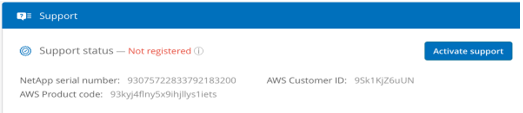

Notes de mise à jour
Notes de mise à jour
Activation du support et accès au support
 Suggérer des modifications
Suggérer des modifications
Une fois que vous avez accès à Cloud Volumes Service peu de temps après vous être abonné à AWS Marketplace, il est fortement recommandé d’activer ces droits. L’activation du support technique vous permet d’accéder au support technique par chat en ligne, système de gestion de tickets Web et téléphone.
Le niveau de support par défaut est en libre-service jusqu’à ce que l’activation et l’enregistrement du numéro de série soient terminés.
Activation des droits de support
Au cours du processus d’abonnement initial avec Cloud Volumes Service pour AWS, votre instance de volumes cloud génère un numéro de série NetApp à 20 chiffres, dont le numéro commence par « 930 ». Le numéro de série NetApp correspond à l’abonnement Cloud Volumes Service associé à votre compte AWS. Vous devez enregistrer le numéro de série NetApp pour activer les droits au support. Nous proposons 2 options d’inscription au support :
-
Client NetApp actuel avec un compte SSO existant sur le site de support NetApp (NSS)
-
Nouveau client NetApp sans compte SSO existant sur le site de support NetApp (NSS)
Option 1 : client NetApp actuel avec un compte SSO existant sur le site de support NetApp (NSS)
-
Accédez à l’URL Cloud Volumes Service ou accédez à ce service via le "Portail NetApp Cloud Central". Connectez-vous ensuite à l’aide de vos identifiants NetApp Cloud Central.
-
Afficher votre numéro de série NetApp en sélectionnant support dans l’interface utilisateur de Cloud Volumes Service.

-
Dans la page support, vérifiez que votre statut support indique
Not registered.Si vous ne voyez pas le statut du support et votre numéro de série NetApp, actualisez la page de votre navigateur.
-
Cliquez activer le support pour enregistrer votre numéro de série NetApp :
-
Si vous disposez d’un compte NSS, entrez vos identifiants NSS (nom d’utilisateur et mot de passe) dans la page Activer le support, puis cliquez sur Activer pour activer le support de votre numéro de série NetApp.

-
Si vous êtes un client NetApp existant, mais que vous ne disposez pas d’identifiants SSO NSS, rendez-vous sur le "Site d’inscription au support NetApp" commencez par créer votre compte. Revenez ensuite ici pour vous inscrire avec vos identifiants NSS.
-
Si vous êtes un nouveau client NetApp, reportez-vous aux instructions relatives à l’option 2 ci-dessous.
-
Une fois votre numéro de série NetApp activé, la page support affiche le statut Registered, indiquant que vous avez activé le droit au support.

Il s’agit d’une inscription unique au support qui concerne le numéro de série Cloud Volumes Service applicable. Tout nouvel abonnement Cloud Volumes Service et le nouveau numéro de série qui suit nécessite également l’activation du support. Pour toute question ou tout problème lié à l’inscription au service de support, contactez-nous à l’adresse cvs-support@netapp.com.
Option 2 : nouveau client NetApp sans compte SSO existant sur le site de support NetApp (NSS)
-
Accédez au "Inscription au support Services de données cloud" Pour créer un compte NSS.
-
Sélectionnez je ne suis pas un client NetApp enregistré et le formulaire d’inscription Nouveau client s’affiche.

-
Remplissez les informations requises sur le formulaire :
-
Entrez votre nom et les informations relatives à votre entreprise.
-
Sélectionnez Cloud Volumes Service comme gamme de produits et Amazon Web Services comme fournisseur de services clouds.
-
Saisissez votre numéro de série NetApp et ID client AWS sur la page Cloud Volumes Service support dans les deux champs suivants.
-
Cliquez sur soumettre l’inscription.
-
-
Votre inscription envoyée vous enverra un e-mail de confirmation. Si aucune erreur ne se produit, vous serez redirigé vers une page “enregistrement soumis avec succès”. Vous recevrez également un e-mail dans un délai d’une heure indiquant que « votre produit est désormais éligible pour l’assistance ».
-
En tant que nouveau client NetApp, vous devez également créer un compte utilisateur sur le site de support NetApp (NSS) pour les prochaines activations de support et pour accéder au portail de support pour le chat et la création de tickets en ligne. Accédez au "Site d’inscription au support NetApp" pour effectuer cette tâche. Pour accélérer le processus, vous pouvez fournir le nouveau numéro de série Cloud Volumes Service enregistré.
Il s’agit d’une inscription unique au support qui concerne le numéro de série Cloud Volumes Service applicable. Tout nouvel abonnement Cloud Volumes Service et le nouveau numéro de série qui suit nécessite également l’activation du support. Pour toute question ou tout problème lié à l’inscription au service de support, contactez-nous à l’adresse cvs-support@netapp.com.
Obtenir des informations d’assistance
NetApp prend en charge Cloud Volumes Service de plusieurs façons. De nombreuses options de support en libre-service sont disponibles 24 h/24, 7 j/7, comme des articles de la base de connaissances (KB) ou la communauté NetApp. L’abonnement Cloud Volumes Service acheté sur AWS SaaS Marketplace inclut un support technique à distance par chat, e-mail, création de tickets en ligne ou par téléphone. Vous devez d’abord activer le support pour chaque numéro de série NetApp afin d’utiliser ces options de support qui ne sont pas en libre-service. Un compte SSO du site de support NetApp (NSS) est nécessaire pour la discussion en ligne et la gestion des dossiers.
Vous pouvez accéder aux options de support à partir de l’interface utilisateur Cloud Volumes Service en sélectionnant l’onglet support dans le menu principal. Les options d’assistance disponibles dépendent de votre présence en mode d’essai ou en mode d’abonnement.
Auto-assistance
Ces options sont disponibles en mode d’essai et sont disponibles gratuitement 24h/24, 7j/7 :
-
"Base de connaissances"Sélectionnez les liens de cette section vers la base de connaissances NetApp. Vous pouvez rechercher des articles, des procédures, des FAQ ou des informations de réparation sur Cloud Volumes Service.
-
"Manuel d’utilisation"Sélectionnez le lien cliquer ici pour accéder au centre de documentation Cloud Volumes Service pour AWS.
-
"Communautés"En sélectionnant le lien cliquer ici, vous vous rendez à la communauté Cloud Volumes Service, où vous pourrez communiquer avec des pairs et des experts.
-
Envoyer un courriel en sélectionnant le lien cliquer ici dans la section Commentaires lance un e-mail de soutien par cvs-support@netapp.com. C’est un endroit idéal pour poser des questions générales sur le service, fournir des commentaires et des suggestions ou demander de l’aide pour des problèmes liés à l’intégration.
Assistance par abonnement
Outre les options d’auto-support mentionnées ci-dessus, si vous disposez d’un abonnement payant par Cloud Volumes Service, vous pouvez contacter un ingénieur du support NetApp pour résoudre tout problème.
Une fois votre numéro de série Cloud Volumes Service activé, vous pouvez accéder aux ressources de support technique de NetApp à l’une des méthodes suivantes. Vous devez disposer d’un abonnement Cloud volumes actif pour utiliser ces options de support.
-
"Discussions"Un ticket d’assistance sera également ouvert.
-
"Ticket de support"Sélectionnez Cloud Data Services > Cloud Volumes Service AWS
-
"Téléphone"Pour signaler de nouveaux problèmes ou appeler à propos de billets existants. Cette méthode est préférable pour l’assistance P1 ou immédiate.
Vous pouvez également demander de l’aide commerciale en cliquant sur le bouton "Service commercial" lien.
Votre numéro de série Cloud Volumes Service est visible dans le service, depuis l’option de menu support. Si vous rencontrez des problèmes pour accéder au service et que vous avez enregistré un numéro de série auprès de NetApp préalablement, vous pouvez contacter cvs-support@netapp.com pour obtenir de l’aide. Vous pouvez également consulter la liste des numéros de série des Cloud Volumes Service disponibles sur le site de support NetApp :
-
Connectez-vous à "mysupport.netapp.com".
-
Dans l’onglet de menu produits > Mes produits, sélectionnez la famille de produits SaaS Cloud Volume pour localiser tous les numéros de série enregistrés :